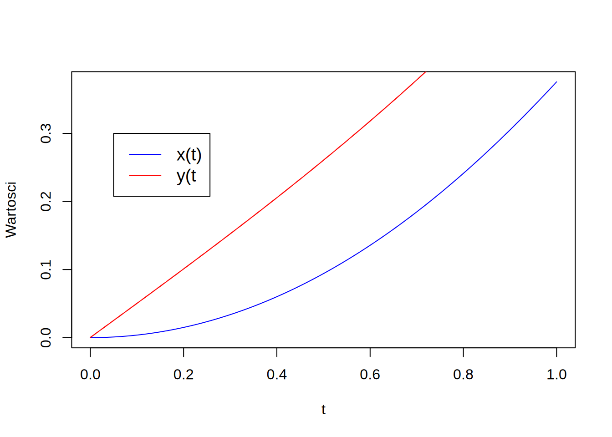

Files for the present tutorial can be found using following links:
During previous laboratory we have learned how to integrate single ordinary differential equation (ODE) in the initial value problem. Introduced numerical methods allow for finding the function \(y(t)\) which satisfies arbitrary first order differential equation: \[ \frac{dy}{dt} = f(t, y(t)) \] with the initial condition \(y(t=t_0)=y_0\). However, in many situations we have to solve simultaneously two or more ODE’s which are coupled with each other, for example by the functions on their right hand sides: \[ \begin{aligned} \frac{dx}{dt} &= sin(y) + cos(x) \cdot t \\ \frac{dy}{dt} &= sin(y) \cdot t + cos(x) \end{aligned} \] As you can observe in the above set of the two first order ODE’s, during their solutions we search for the functions \(x=x(t)\) and \(y=y(t)\). However, the RHS of these equations are both dependent on \(x(t)\) and \(y(t)\). Hence, to solve first equation for \(x(t)\) one needs to know how \(y(t)\) is changing in time. To solve second equation for \(y(t)\) one needs to know how \(x(t)\) is changing in time. Therefore, these two equations are strongly coupled. To solve above problem (the set of two first-order ODE’s) we have to integrate both equations simultaneously. This is the main subject of the present laboratory.
The issue of the numerical solution of the set of first-order ODE’s very often is related to problems which are described by higher order ODE’s. Here, the most common one are the second-order differential equations especially in the models describing dynamics of the mechanical systems, e.g., movement of the solid body or material point under action of external forces. These equations typically read: \[ \frac{d^2x}{dt^2} = f(t, x, \frac{dx}{dt}) \] Each second-order ODE, can be reformulated into the form of the set of two first- order ODE’s: \[ \begin{aligned} \frac{dv_x}{dt} &= f_1(t, x, v_x) \\ \frac{dx}{dt} &= v_x \end{aligned} \]
Above set of equations can be reduced to the single second-order equation (by substitution); their solutions are therefore corresponding. Note, the unknown functions to dertermine are \(v_x(t)\) and \(x(t)\). For this reason we also need two initial conditions at \(t=0\), for instance: \(v_x(t=0)=v_0\) and \(x(t=0)=x_0\), where \(v_0\), \(x_0\) are known, specified values.
We already know two numerical techniques that can be used to integrate the first-order ODE in time, namely:
These two iterative methods allow to find the values of the unknown function(s) in the next time moments (time levels). In the case of the sets of ODE’s we use similar approach. First we compute the value of the functions based on the previous solution. The difference is that the next integration step must be performed for all equations in the given system. Let us consider set of equations:
\[ \begin{aligned} \frac{dx}{dt} &= sin(y) + cos(x) \cdot t \\ \frac{dy}{dt} &= sin(y) \cdot t + cos(x) \end{aligned} \] with initial conditions: \[ x(t=0) = 0 \\ y(t=0) = 0 \]
For the above system of equations, integration using the Euler’s method can be described using the following algorithm:
Set \(x0 = x(t=0)\), \(y0 = y(t=0)\), the integration strart at \(t=0\), choose the time step size \(dt\), e.g. \(dt = 0.001\).
Compute derivatives of functions \(x\) and \(y\) using known values \(x0, y0, t\), in this case: \[ dxdt = sin(y0) + cos(x0) \cdot t = sin(0) + cos(0) \cdot 0 = 0 \\ dydt = sin(y0) \cdot 0 + cos(x0) = sin(0) \cdot 0 + cos(0) = 1 \]
Using values of the drivatives obtained at time \(t=0\) compute new values of functions \(x\), \(y\) at the next time level: \[ x1 = x0 + dt \cdot dxdt = 0 + 0.001 \cdot 0 = 0 \\ y1 = y0 + dt \cdot dydt = 0 + 0.001 \cdot 1 = 0.001 \]
Update the variables setting: \[ x0 = x1 = 0, \quad y0 = y1 = 0.001, \quad t = t + dt = 0.001 \]
Goto point 2. and repeat all operations until variable \(t\) equals its final value \(T\) (\(T\) is set by the user).
Using above algorithm one can obtain the results presented on the figure below in time [0,T], here \(T=1\).

The above algorithm can be easily reformulated in order to use the Runge-Kutta method. The only difference is in the way how the right hand sides are calculated, i.e., how variables \(dxdt\) and \(dydt\) are updated.
X,
Y for each time step.In order to use Euler’s or RK-4 method to problems described by higher-order differential equations, one needs to transform higher-order equation into a set of the first-order differential equations.
Let us consider the problem that is depicted on the above figure.
The movement of the cart (assuming that initially the spring is not streached and mass of the cart wheels is negligible) can be described using equation resulting from the III law of Newton’s dynamics: \[ F_{cart} = - k\cdot x = m \cdot a\] knowing that acceleration is the second derivative of the cart position in time we can write: \[ \frac{d^2x}{dt^2} = - \frac{k}{m} \cdot x \]
Beside the equation, we also need initial conditions. As considered equation is second-order, two initial conditions are needed. In this case we can assume that initial position of the cart is located at the beginning of the coordinate system: \[ x(t=0) = 0 \] and, that initially the cart is at rest: \[ \frac{dx}{dt}(t=0)=0 \] Next, we have to reformulate above problem to the set of two first-order ODE’s. It can be done in several different ways, for example using canonical equations (they introduce pair: position, momentum). As our case is simple, we note that introduction of a new variable - \(v\) and substitution \[ v = \frac{dx}{dt} \] is sufficent to obtain an additional equation. This new equation relates velocity and position. Using above to the second order ODE we note: \[ \frac{d^2x}{dt^2} = \frac{d}{dt} (\frac{dx}{dt}) = \frac{dv}{dt} = -\frac{k}{m}x \] The same operation must be repeated for initial conditions. Finally we obtain following set of the first-order ODE’s: \[ \frac{dv}{dt} = -\frac{k}{m} x \\ \frac{dx}{dt} = v \\ x(t=0) = 0 \\ v(t=0) = 0 \]
The movement of the mathematical pendulum (neglecting air reistance and assuming the line is massless and not extendable) is described by the following ordinary differential equation with the initial conditions: \[ \begin{aligned} &\frac{d^2\alpha}{dt^2} = -\frac{g}{l}sin(\alpha) \\ &\alpha(t_0) = \alpha_0 \\ &\frac{d\alpha}{dt}(t_0) = \omega_0 \end{aligned} \] where:
\(\alpha\) - the angle describing deviation of the pendulum from its equilibrium position,
\(g\) - gravitational acceleration,
\(l\) - the length of pendulum line,
\(m\) - the mass of pendulum.
Transform the above second-order equation to the set of first-order ordinary differential equations.
Write a program using RK-4 method which computes \(\alpha(t)\) - angular position and \(\omega(t) = \frac{d\alpha}{dt}\) - angular velocity in time \(t \in \left[0,10\right]\)
Additionaly, compute how the total mechanical energy \(E(t)\) is changing in time. The total mechanical energy of pendulum reads: \[E = \frac{ml^2}{2}(\frac{d\alpha}{dt})^2 + mgl(1-cos(\alpha))\] Note: In the case with zero dissipation the total mechanical energy should be constant.
Repeat computations using different values of the time step size \(\Delta t\). Investigate stability of the solution for Euler’s and RK-4 methods. Conclude, which method has larger domain of stability?